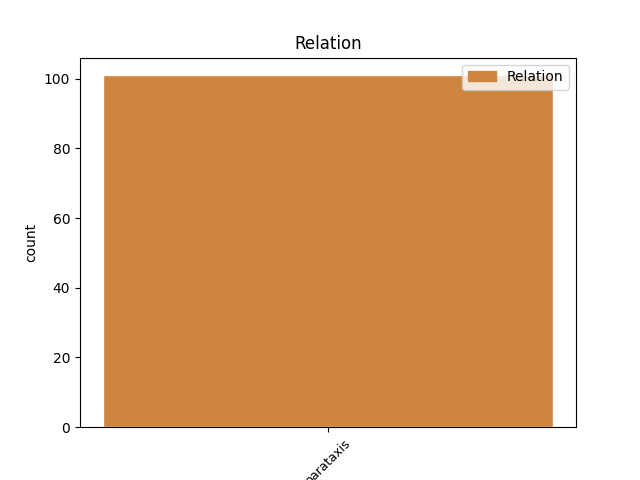
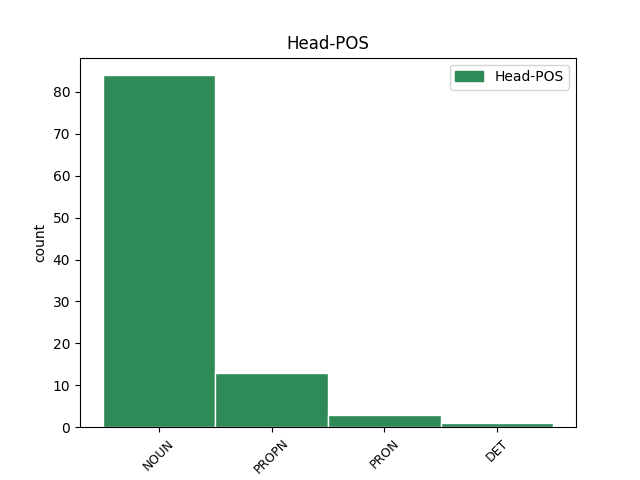
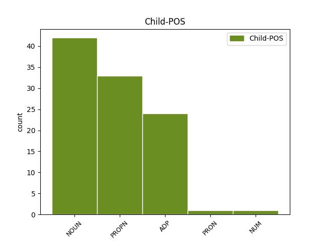

Distribution of features within this leaf



Agreement Rules sorted by frequency.
- When the dependent token is the parataxis(parataxis) of the head token, and the head token is NOUN and the dependent token is NOUN.
1 Grad _ _ _ _ 0 _ _ _
2 Zagreb _ _ _ _ 0 _ _ _
3 tradicionalno _ _ _ _ 0 _ _ _
4 organizira _ _ _ _ 0 _ _ _
5 maksimirsku _ _ _ _ 0 _ _ _
6 proslavu _ _ _ _ 0 _ _ _
7 , _ _ _ _ 0 _ _ _
8 a _ _ _ _ 0 _ _ _
9 podijelit _ _ _ _ 0 _ _ _
10 će _ _ _ _ 0 _ _ _
11 se _ _ _ _ 0 _ _ _
12 50 _ _ _ _ 0 _ _ _
13 tisuća tisuća NOUN Ncfpg Case=Gen|Gender=Fem|Number=Plur 0 _ _ _
14 porcija _ _ _ _ 0 _ _ _
15 graha _ _ _ _ 0 _ _ _
16 , _ _ _ _ 0 _ _ _
17 10 _ _ _ _ 0 _ _ _
18 tisuća _ _ _ _ 0 _ _ _
19 više _ _ _ _ 0 _ _ _
20 nego _ _ _ _ 0 _ _ _
21 prošle _ _ _ _ 0 _ _ _
22 godine godina NOUN Ncfsg Case=Gen|Gender=Fem|Number=Sing 13 parataxis _ SpaceAfter=No
23 . _ _ _ _ 0 _ _ _
1 Mehanizam mehanizam NOUN Ncmsn Case=Nom|Gender=Masc|Number=Sing 0 _ _ _
2 europske _ _ _ _ 0 _ _ _
3 stabilnosti _ _ _ _ 0 _ _ _
4 ( _ _ _ _ 0 _ _ _
5 ESM ESM PROPN Npmsn Case=Nom|Gender=Masc|Number=Sing 1 parataxis _ SpaceAfter=No
6 ) _ _ _ _ 0 _ _ _
7 , _ _ _ _ 0 _ _ _
8 kako _ _ _ _ 0 _ _ _
9 će _ _ _ _ 0 _ _ _
10 novi _ _ _ _ 0 _ _ _
11 sustav _ _ _ _ 0 _ _ _
12 za _ _ _ _ 0 _ _ _
13 pomoć _ _ _ _ 0 _ _ _
14 državama _ _ _ _ 0 _ _ _
15 članicama _ _ _ _ 0 _ _ _
16 u _ _ _ _ 0 _ _ _
17 financijskim _ _ _ _ 0 _ _ _
18 poteškoćama _ _ _ _ 0 _ _ _
19 biti _ _ _ _ 0 _ _ _
20 nazvan _ _ _ _ 0 _ _ _
21 , _ _ _ _ 0 _ _ _
22 zamijenit _ _ _ _ 0 _ _ _
23 će _ _ _ _ 0 _ _ _
24 trogodišnji _ _ _ _ 0 _ _ _
25 Instrument _ _ _ _ 0 _ _ _
26 europske _ _ _ _ 0 _ _ _
27 financijske _ _ _ _ 0 _ _ _
28 stabilnosti _ _ _ _ 0 _ _ _
29 ( _ _ _ _ 0 _ _ _
30 EFSF _ _ _ _ 0 _ _ _
31 ) _ _ _ _ 0 _ _ _
32 , _ _ _ _ 0 _ _ _
33 koji _ _ _ _ 0 _ _ _
34 je _ _ _ _ 0 _ _ _
35 stupio _ _ _ _ 0 _ _ _
36 na _ _ _ _ 0 _ _ _
37 snagu _ _ _ _ 0 _ _ _
38 u _ _ _ _ 0 _ _ _
39 lipnju _ _ _ _ 0 _ _ _
40 2010. _ _ _ _ 0 _ _ _
41 godine _ _ _ _ 0 _ _ _
42 . _ _ _ _ 0 _ _ _
1 Kako _ _ _ _ 0 _ _ _
2 je _ _ _ _ 0 _ _ _
3 rok _ _ _ _ 0 _ _ _
4 za _ _ _ _ 0 _ _ _
5 prilagodbu _ _ _ _ 0 _ _ _
6 lipanj _ _ _ _ 0 _ _ _
7 , _ _ _ _ 0 _ _ _
8 većina _ _ _ _ 0 _ _ _
9 ravnatelja ravnatelj NOUN Ncmpg Case=Gen|Gender=Masc|Number=Plur 0 _ _ _
10 još _ _ _ _ 0 _ _ _
11 ne _ _ _ _ 0 _ _ _
12 razmišlja _ _ _ _ 0 _ _ _
13 o _ _ _ _ 0 _ _ _
14 rekonstrukciji _ _ _ _ 0 _ _ _
15 uprave _ _ _ _ 0 _ _ _
16 , _ _ _ _ 0 _ _ _
17 poput poput ADP Sg Case=Gen 9 parataxis _ _
18 Željka _ _ _ _ 0 _ _ _
19 Reinera _ _ _ _ 0 _ _ _
20 , _ _ _ _ 0 _ _ _
21 ravnatelja _ _ _ _ 0 _ _ _
22 KBC-a _ _ _ _ 0 _ _ _
23 Zagreb _ _ _ _ 0 _ _ _
24 koji _ _ _ _ 0 _ _ _
25 osim _ _ _ _ 0 _ _ _
26 zamjenika _ _ _ _ 0 _ _ _
27 i _ _ _ _ 0 _ _ _
28 glavne _ _ _ _ 0 _ _ _
29 sestre _ _ _ _ 0 _ _ _
30 ima _ _ _ _ 0 _ _ _
31 pet _ _ _ _ 0 _ _ _
32 pomoćnika _ _ _ _ 0 _ _ _
33 pa _ _ _ _ 0 _ _ _
34 četiri _ _ _ _ 0 _ _ _
35 treba _ _ _ _ 0 _ _ _
36 smijeniti _ _ _ _ 0 _ _ _
37 . _ _ _ _ 0 _ _ _
1 ZAGREB Zagreb PROPN Npmsn Case=Nom|Gender=Masc|Number=Sing 0 _ _ _
2 , _ _ _ _ 0 _ _ _
3 12. _ _ _ _ 0 _ _ _
4 listopada _ _ _ _ 0 _ _ _
5 2004. _ _ _ _ 0 _ _ _
6 ( _ _ _ _ 0 _ _ _
7 Hina Hina PROPN Npfsn Case=Nom|Gender=Fem|Number=Sing 1 parataxis _ SpaceAfter=No
8 ) _ _ _ _ 0 _ _ _
9 - _ _ _ _ 0 _ _ _
10 Fond _ _ _ _ 0 _ _ _
11 za _ _ _ _ 0 _ _ _
12 zaštitu _ _ _ _ 0 _ _ _
13 okoliša _ _ _ _ 0 _ _ _
14 i _ _ _ _ 0 _ _ _
15 energetsku _ _ _ _ 0 _ _ _
16 učinkovitost _ _ _ _ 0 _ _ _
17 danas _ _ _ _ 0 _ _ _
18 je _ _ _ _ 0 _ _ _
19 raspisao _ _ _ _ 0 _ _ _
20 natječaj _ _ _ _ 0 _ _ _
21 za _ _ _ _ 0 _ _ _
22 financiranje _ _ _ _ 0 _ _ _
23 programa _ _ _ _ 0 _ _ _
24 sanacije _ _ _ _ 0 _ _ _
25 odlagališta _ _ _ _ 0 _ _ _
26 komunalnog _ _ _ _ 0 _ _ _
27 otpada _ _ _ _ 0 _ _ _
28 u _ _ _ _ 0 _ _ _
29 jedinicama _ _ _ _ 0 _ _ _
30 lokalne _ _ _ _ 0 _ _ _
31 samouprave _ _ _ _ 0 _ _ _
32 . _ _ _ _ 0 _ _ _
1 Radi _ _ _ _ 0 _ _ _
2 se _ _ _ _ 0 _ _ _
3 o _ _ _ _ 0 _ _ _
4 boksaču _ _ _ _ 0 _ _ _
5 koji _ _ _ _ 0 _ _ _
6 je _ _ _ _ 0 _ _ _
7 najveći _ _ _ _ 0 _ _ _
8 dio _ _ _ _ 0 _ _ _
9 profesionalne _ _ _ _ 0 _ _ _
10 karijere _ _ _ _ 0 _ _ _
11 proveo _ _ _ _ 0 _ _ _
12 u _ _ _ _ 0 _ _ _
13 poluteškoj _ _ _ _ 0 _ _ _
14 kategoriji _ _ _ _ 0 _ _ _
15 u _ _ _ _ 0 _ _ _
16 kojoj _ _ _ _ 0 _ _ _
17 je _ _ _ _ 0 _ _ _
18 bio _ _ _ _ 0 _ _ _
19 i _ _ _ _ 0 _ _ _
20 svjetski _ _ _ _ 0 _ _ _
21 prvak _ _ _ _ 0 _ _ _
22 , _ _ _ _ 0 _ _ _
23 a _ _ _ _ 0 _ _ _
24 naslove _ _ _ _ 0 _ _ _
25 mu _ _ _ _ 0 _ _ _
26 je _ _ _ _ 0 _ _ _
27 2007. _ _ _ _ 0 _ _ _
28 preoteo _ _ _ _ 0 _ _ _
29 David David PROPN Npmsn Case=Nom|Gender=Masc|Number=Sing 0 _ _ _
30 Haye _ _ _ _ 0 _ _ _
31 , _ _ _ _ 0 _ _ _
32 inače _ _ _ _ 0 _ _ _
33 posljednja _ _ _ _ 0 _ _ _
34 žrtva žrtva NOUN Ncfsn Case=Nom|Gender=Fem|Number=Sing 29 parataxis _ _
35 Vladimira _ _ _ _ 0 _ _ _
36 Klička _ _ _ _ 0 _ _ _
37 . _ _ _ _ 0 _ _ _
1 Neka _ _ _ _ 0 _ _ _
2 ona on PRON Pp3fsn Case=Nom|Gender=Fem|Number=Sing|Person=3|PronType=Prs 0 _ _ _
3 [ _ _ _ _ 0 _ _ _
4 vlada vlada NOUN Ncfsn Case=Nom|Gender=Fem|Number=Sing 2 parataxis _ SpaceAfter=No
5 ] _ _ _ _ 0 _ _ _
6 nastavi _ _ _ _ 0 _ _ _
7 tražiti _ _ _ _ 0 _ _ _
8 pojas _ _ _ _ 0 _ _ _
9 za _ _ _ _ 0 _ _ _
10 spašavanje _ _ _ _ 0 _ _ _
11 zbog _ _ _ _ 0 _ _ _
12 vlastite _ _ _ _ 0 _ _ _
13 nekompetentnosti _ _ _ _ 0 _ _ _
14 i _ _ _ _ 0 _ _ _
15 neučinkovitosti _ _ _ _ 0 _ _ _
16 " _ _ _ _ 0 _ _ _
17 , _ _ _ _ 0 _ _ _
18 izjavio _ _ _ _ 0 _ _ _
19 je _ _ _ _ 0 _ _ _
20 glasnogovornik _ _ _ _ 0 _ _ _
21 ND _ _ _ _ 0 _ _ _
22 Yiannis _ _ _ _ 0 _ _ _
23 Mihelakis _ _ _ _ 0 _ _ _
24 30. _ _ _ _ 0 _ _ _
25 kolovoza _ _ _ _ 0 _ _ _
26 . _ _ _ _ 0 _ _ _
1 Niti _ _ _ _ 0 _ _ _
2 jedna jedan NUM Mlcfsn Case=Nom|Gender=Fem|Number=Sing|NumType=Card 3 parataxis _ _
3 manžeta manžeta NOUN Ncfsn Case=Nom|Gender=Fem|Number=Sing 0 _ _ _
4 nije _ _ _ _ 0 _ _ _
5 nagrižena _ _ _ _ 0 _ _ _
6 ili _ _ _ _ 0 _ _ _
7 oštećena _ _ _ _ 0 _ _ _
8 , _ _ _ _ 0 _ _ _
9 niti _ _ _ _ 0 _ _ _
10 je _ _ _ _ 0 _ _ _
11 narušena _ _ _ _ 0 _ _ _
12 geometrija _ _ _ _ 0 _ _ _
13 ovjesa _ _ _ _ 0 _ _ _
14 , _ _ _ _ 0 _ _ _
15 a _ _ _ _ 0 _ _ _
16 u _ _ _ _ 0 _ _ _
17 jednako _ _ _ _ 0 _ _ _
18 pohvalnom _ _ _ _ 0 _ _ _
19 stanju _ _ _ _ 0 _ _ _
20 zatekli _ _ _ _ 0 _ _ _
21 smo _ _ _ _ 0 _ _ _
22 još _ _ _ _ 0 _ _ _
23 uvijek _ _ _ _ 0 _ _ _
24 originalan _ _ _ _ 0 _ _ _
25 ispušni _ _ _ _ 0 _ _ _
26 sustav _ _ _ _ 0 _ _ _
27 . _ _ _ _ 0 _ _ _
1 Dovoljno _ _ _ _ 0 _ _ _
2 se sebe PRON Px--sa Case=Acc|PronType=Prs|Reflex=Yes 0 _ _ _
3 film _ _ _ _ 0 _ _ _
4 bavi _ _ _ _ 0 _ _ _
5 Bruceovom _ _ _ _ 0 _ _ _
6 psihom _ _ _ _ 0 _ _ _
7 , _ _ _ _ 0 _ _ _
8 ne _ _ _ _ 0 _ _ _
9 može _ _ _ _ 0 _ _ _
10 se sebe PRON Px--sa Case=Acc|PronType=Prs|Reflex=Yes 2 parataxis _ _
11 reći _ _ _ _ 0 _ _ _
12 da _ _ _ _ 0 _ _ _
13 ne _ _ _ _ 0 _ _ _
14 , _ _ _ _ 0 _ _ _
15 ali _ _ _ _ 0 _ _ _
16 opet _ _ _ _ 0 _ _ _
17 , _ _ _ _ 0 _ _ _
18 fali _ _ _ _ 0 _ _ _
19 mu _ _ _ _ 0 _ _ _
20 ono _ _ _ _ 0 _ _ _
21 nešto _ _ _ _ 0 _ _ _
22 mračno _ _ _ _ 0 _ _ _
23 i _ _ _ _ 0 _ _ _
24 zagonetno _ _ _ _ 0 _ _ _
25 što _ _ _ _ 0 _ _ _
26 je _ _ _ _ 0 _ _ _
27 krasilo _ _ _ _ 0 _ _ _
28 Michaela _ _ _ _ 0 _ _ _
29 Keatona _ _ _ _ 0 _ _ _
30 . _ _ _ _ 0 _ _ _
1 Na _ _ _ _ 0 _ _ _
2 uzorku _ _ _ _ 0 _ _ _
3 od _ _ _ _ 0 _ _ _
4 300 _ _ _ _ 0 _ _ _
5 - _ _ _ _ 0 _ _ _
6 tinjak _ _ _ _ 0 _ _ _
7 ispitanika _ _ _ _ 0 _ _ _
8 GfK _ _ _ _ 0 _ _ _
9 je _ _ _ _ 0 _ _ _
10 ovo _ _ _ _ 0 _ _ _
11 istraživanje _ _ _ _ 0 _ _ _
12 proveo _ _ _ _ 0 _ _ _
13 u _ _ _ _ 0 _ _ _
14 lipnju _ _ _ _ 0 _ _ _
15 on-line _ _ _ _ 0 _ _ _
16 anketom _ _ _ _ 0 _ _ _
17 , _ _ _ _ 0 _ _ _
18 a _ _ _ _ 0 _ _ _
19 sudionici _ _ _ _ 0 _ _ _
20 su _ _ _ _ 0 _ _ _
21 ocijenili _ _ _ _ 0 _ _ _
22 da _ _ _ _ 0 _ _ _
23 bi _ _ _ _ 0 _ _ _
24 se _ _ _ _ 0 _ _ _
25 Hrvatska _ _ _ _ 0 _ _ _
26 u _ _ _ _ 0 _ _ _
27 turizmu _ _ _ _ 0 _ _ _
28 trebala _ _ _ _ 0 _ _ _
29 ugledati _ _ _ _ 0 _ _ _
30 prvenstveno _ _ _ _ 0 _ _ _
31 na _ _ _ _ 0 _ _ _
32 Austriju _ _ _ _ 0 _ _ _
33 ( _ _ _ _ 0 _ _ _
34 18 _ _ _ _ 0 _ _ _
35 posto _ _ _ _ 0 _ _ _
36 ispitanika _ _ _ _ 0 _ _ _
37 ) _ _ _ _ 0 _ _ _
38 i _ _ _ _ 0 _ _ _
39 Španjolsku _ _ _ _ 0 _ _ _
40 ( _ _ _ _ 0 _ _ _
41 14 _ _ _ _ 0 _ _ _
42 posto _ _ _ _ 0 _ _ _
43 ) _ _ _ _ 0 _ _ _
44 , _ _ _ _ 0 _ _ _
45 kao _ _ _ _ 0 _ _ _
46 i _ _ _ _ 0 _ _ _
47 na _ _ _ _ 0 _ _ _
48 Francusku _ _ _ _ 0 _ _ _
49 ( _ _ _ _ 0 _ _ _
50 9 _ _ _ _ 0 _ _ _
51 posto _ _ _ _ 0 _ _ _
52 ) _ _ _ _ 0 _ _ _
53 , _ _ _ _ 0 _ _ _
54 Grčku _ _ _ _ 0 _ _ _
55 ( _ _ _ _ 0 _ _ _
56 8 _ _ _ _ 0 _ _ _
57 posto _ _ _ _ 0 _ _ _
58 ) _ _ _ _ 0 _ _ _
59 te _ _ _ _ 0 _ _ _
60 Italiju Italija PROPN Npfsa Case=Acc|Gender=Fem|Number=Sing 0 _ _ _
61 i _ _ _ _ 0 _ _ _
62 Tursku _ _ _ _ 0 _ _ _
63 ( _ _ _ _ 0 _ _ _
64 po po ADP Sa Case=Acc 60 parataxis _ _
65 7 _ _ _ _ 0 _ _ _
66 posto _ _ _ _ 0 _ _ _
67 ) _ _ _ _ 0 _ _ _
68 . _ _ _ _ 0 _ _ _
Disagree Examples:
1 Sljedeća _ _ _ _ 0 _ _ _
2 tri _ _ _ _ 0 _ _ _
3 mjeseca _ _ _ _ 0 _ _ _
4 bit _ _ _ _ 0 _ _ _
5 će _ _ _ _ 0 _ _ _
6 ključna _ _ _ _ 0 _ _ _
7 za _ _ _ _ 0 _ _ _
8 hrvatsku _ _ _ _ 0 _ _ _
9 kandidaturu _ _ _ _ 0 _ _ _
10 da _ _ _ _ 0 _ _ _
11 postane _ _ _ _ 0 _ _ _
12 28. _ _ _ _ 0 _ _ _
13 članica _ _ _ _ 0 _ _ _
14 EU _ _ _ _ 0 _ _ _
15 2010. _ _ _ _ 0 _ _ _
16 godine _ _ _ _ 0 _ _ _
17 , _ _ _ _ 0 _ _ _
18 izjavio _ _ _ _ 0 _ _ _
19 je _ _ _ _ 0 _ _ _
20 visoki _ _ _ _ 0 _ _ _
21 dužnosnik _ _ _ _ 0 _ _ _
22 Europske _ _ _ _ 0 _ _ _
23 komisije komisija NOUN Ncfsg Case=Gen|Gender=Fem|Number=Sing 0 _ _ _
24 ( _ _ _ _ 0 _ _ _
25 EC EC PROPN Npmsn Case=Nom|Gender=Masc|Number=Sing 23 parataxis _ SpaceAfter=No
26 ) _ _ _ _ 0 _ _ _
27 u _ _ _ _ 0 _ _ _
28 utorak _ _ _ _ 0 _ _ _
29 ( _ _ _ _ 0 _ _ _
30 8. _ _ _ _ 0 _ _ _
31 travnja _ _ _ _ 0 _ _ _
32 ) _ _ _ _ 0 _ _ _
33 , _ _ _ _ 0 _ _ _
34 pozivajući _ _ _ _ 0 _ _ _
35 Zagreb _ _ _ _ 0 _ _ _
36 na _ _ _ _ 0 _ _ _
37 ubrzanje _ _ _ _ 0 _ _ _
38 reformskih _ _ _ _ 0 _ _ _
39 napora _ _ _ _ 0 _ _ _
40 . _ _ _ _ 0 _ _ _
1 Reforme _ _ _ _ 0 _ _ _
2 u _ _ _ _ 0 _ _ _
3 problemima _ _ _ _ 0 _ _ _
4 opterećenom _ _ _ _ 0 _ _ _
5 sustavu _ _ _ _ 0 _ _ _
6 visokog _ _ _ _ 0 _ _ _
7 školstva _ _ _ _ 0 _ _ _
8 koncem _ _ _ _ 0 _ _ _
9 prošlog _ _ _ _ 0 _ _ _
10 mjeseca _ _ _ _ 0 _ _ _
11 ( _ _ _ _ 0 _ _ _
12 24. _ _ _ _ 0 _ _ _
13 kolovoza _ _ _ _ 0 _ _ _
14 ) _ _ _ _ 0 _ _ _
15 , _ _ _ _ 0 _ _ _
16 koje _ _ _ _ 0 _ _ _
17 su _ _ _ _ 0 _ _ _
18 izazvale _ _ _ _ 0 _ _ _
19 veliku _ _ _ _ 0 _ _ _
20 pozornost _ _ _ _ 0 _ _ _
21 , _ _ _ _ 0 _ _ _
22 uključuju _ _ _ _ 0 _ _ _
23 i _ _ _ _ 0 _ _ _
24 praktično _ _ _ _ 0 _ _ _
25 ukidanje _ _ _ _ 0 _ _ _
26 širokog _ _ _ _ 0 _ _ _
27 " _ _ _ _ 0 _ _ _
28 statusa _ _ _ _ 0 _ _ _
29 azila _ _ _ _ 0 _ _ _
30 " _ _ _ _ 0 _ _ _
31 koji _ _ _ _ 0 _ _ _
32 su _ _ _ _ 0 _ _ _
33 uživale _ _ _ _ 0 _ _ _
34 obrazovne _ _ _ _ 0 _ _ _
35 institucije _ _ _ _ 0 _ _ _
36 , _ _ _ _ 0 _ _ _
37 nakon _ _ _ _ 0 _ _ _
38 što _ _ _ _ 0 _ _ _
39 je _ _ _ _ 0 _ _ _
40 do _ _ _ _ 0 _ _ _
41 sada _ _ _ _ 0 _ _ _
42 nezabilježena _ _ _ _ 0 _ _ _
43 parlamentarna _ _ _ _ 0 _ _ _
44 većina većina NOUN Ncfsn Case=Nom|Gender=Fem|Number=Sing 0 _ _ _
45 -- _ _ _ _ 0 _ _ _
46 250 _ _ _ _ 0 _ _ _
47 od _ _ _ _ 0 _ _ _
48 300 _ _ _ _ 0 _ _ _
49 zastupnika zastupnik NOUN Ncmpg Case=Gen|Gender=Masc|Number=Plur 44 parataxis _ _
50 -- _ _ _ _ 0 _ _ _
51 usvojila _ _ _ _ 0 _ _ _
52 okvirni _ _ _ _ 0 _ _ _
53 zakon _ _ _ _ 0 _ _ _
54 . _ _ _ _ 0 _ _ _
1 Također _ _ _ _ 0 _ _ _
2 u u ADP Sl Case=Loc 15 parataxis _ _
3 pregledu _ _ _ _ 0 _ _ _
4 vijesti _ _ _ _ 0 _ _ _
5 iz _ _ _ _ 0 _ _ _
6 kulture _ _ _ _ 0 _ _ _
7 i _ _ _ _ 0 _ _ _
8 sporta _ _ _ _ 0 _ _ _
9 : _ _ _ _ 0 _ _ _
10 Fuad _ _ _ _ 0 _ _ _
11 Muzurović _ _ _ _ 0 _ _ _
12 po _ _ _ _ 0 _ _ _
13 drugi _ _ _ _ 0 _ _ _
14 put _ _ _ _ 0 _ _ _
15 izbornik izbornik NOUN Ncmsn Case=Nom|Gender=Masc|Number=Sing 0 _ _ _
16 nogometne _ _ _ _ 0 _ _ _
17 reprezentacije _ _ _ _ 0 _ _ _
18 Bosne _ _ _ _ 0 _ _ _
19 i _ _ _ _ 0 _ _ _
20 Hercegovine _ _ _ _ 0 _ _ _
21 , _ _ _ _ 0 _ _ _
22 Emir _ _ _ _ 0 _ _ _
23 Kusturica _ _ _ _ 0 _ _ _
24 najavljuje _ _ _ _ 0 _ _ _
25 premijeru _ _ _ _ 0 _ _ _
26 opere _ _ _ _ 0 _ _ _
27 temeljene _ _ _ _ 0 _ _ _
28 na _ _ _ _ 0 _ _ _
29 njegovu _ _ _ _ 0 _ _ _
30 filmu _ _ _ _ 0 _ _ _
31 " _ _ _ _ 0 _ _ _
32 Dom _ _ _ _ 0 _ _ _
33 za _ _ _ _ 0 _ _ _
34 vješanje _ _ _ _ 0 _ _ _
35 " _ _ _ _ 0 _ _ _
36 . _ _ _ _ 0 _ _ _
1 Mađarski _ _ _ _ 0 _ _ _
2 premijer premijer NOUN Ncmsn Case=Nom|Gender=Masc|Number=Sing 0 _ _ _
3 Ferenc _ _ _ _ 0 _ _ _
4 Gyurcsany _ _ _ _ 0 _ _ _
5 ( _ _ _ _ 0 _ _ _
6 u u ADP Sl Case=Loc 2 parataxis _ _
7 sredini _ _ _ _ 0 _ _ _
8 ) _ _ _ _ 0 _ _ _
9 nazoči _ _ _ _ 0 _ _ _
10 sjednici _ _ _ _ 0 _ _ _
11 parlamenta _ _ _ _ 0 _ _ _
12 u _ _ _ _ 0 _ _ _
13 Budimpešti _ _ _ _ 0 _ _ _
14 , _ _ _ _ 0 _ _ _
15 u _ _ _ _ 0 _ _ _
16 utorak _ _ _ _ 0 _ _ _
17 ( _ _ _ _ 0 _ _ _
18 19. _ _ _ _ 0 _ _ _
19 rujan _ _ _ _ 0 _ _ _
20 ) _ _ _ _ 0 _ _ _
21 . _ _ _ _ 0 _ _ _
1 Uz _ _ _ _ 0 _ _ _
2 to _ _ _ _ 0 _ _ _
3 , _ _ _ _ 0 _ _ _
4 kolekcija _ _ _ _ 0 _ _ _
5 sadrži _ _ _ _ 0 _ _ _
6 karijatidu karijatida NOUN Ncfsa Case=Acc|Gender=Fem|Number=Sing 0 _ _ _
7 s _ _ _ _ 0 _ _ _
8 Erehteiona _ _ _ _ 0 _ _ _
9 ( _ _ _ _ 0 _ _ _
10 od od ADP Sg Case=Gen 6 parataxis _ _
11 izvornih _ _ _ _ 0 _ _ _
12 6 _ _ _ _ 0 _ _ _
13 ) _ _ _ _ 0 _ _ _
14 , _ _ _ _ 0 _ _ _
15 četiri _ _ _ _ 0 _ _ _
16 odlomka _ _ _ _ 0 _ _ _
17 friza _ _ _ _ 0 _ _ _
18 Nikinog _ _ _ _ 0 _ _ _
19 hrama _ _ _ _ 0 _ _ _
20 i _ _ _ _ 0 _ _ _
21 arhitektonske _ _ _ _ 0 _ _ _
22 fragmente _ _ _ _ 0 _ _ _
23 Partenona _ _ _ _ 0 _ _ _
24 , _ _ _ _ 0 _ _ _
25 Propylaie _ _ _ _ 0 _ _ _
26 , _ _ _ _ 0 _ _ _
27 Erehteiona _ _ _ _ 0 _ _ _
28 i _ _ _ _ 0 _ _ _
29 Nikinog _ _ _ _ 0 _ _ _
30 hrama _ _ _ _ 0 _ _ _
31 . _ _ _ _ 0 _ _ _